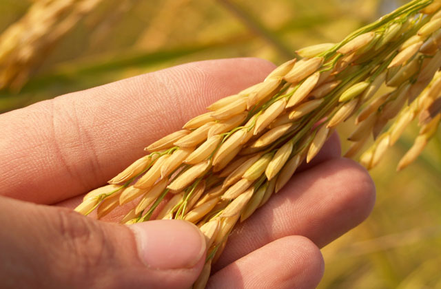

Features
APEDA has set up an on-line grievance handling system to facilitate speedy redress of complaints. Anyone wishing to lodge a complaint with regard to services rendered can log on to itrack.apeda.gov.in( the link is provided on the main web page of APEDA web site). A complainant needs to sign up, to create a user ID and password. An exporter complainant must also enter his RCMC No. APEDA has categorized the complaints based on services provided, that must be selected by the complainant. A complainant is required to enter details regarding his complaint on the Screen form that is available to him after logging in. However, a complainant is free to send his complaints through post giving all details regarding the nature of complaint and his contact details through which APEDA can communicate with him.
This Citizen’s Charter has been prepared in consultation with a stakeholder group comprising exporters, other customers, industry associations, government officials and APEDA’s Officers. This Citizen’s Charter shall be reviewed once in two years
Learn More


